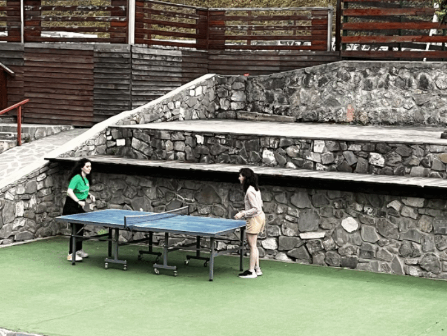

Experiences
Disclaimer: These texts were written at the end of Y1
Mariam Modebadze (she/her)
For me, DP year was an emotional rollercoaster. Before starting the DP year, I was not expecting to sip champagne or have a blast every day. We had several meetings before starting the year with our coordinator who demonstrated how the IB system works and what is a learner profile. She also mentioned that time management is the key to "survive IB". And she was right! The highs and lows might come to you fairly quickly if you won't do everything on time or else you will be under fire. Success in the IBDP depends on good time management and study habits. IB taught me not to procrastinate tasks which now think is a habit I will take to university. It also taught me how to express my creative side and be a critical thinker.
Personally, I like IB because it encourages and motivates pupils to actually succeed and discover their potential. The IB is incredibly rewarding for people who want to push themselves. Fortunately, I had truly outstanding teachers in my chosen subjects who helped me to learn new things every day and develop my skills. To be honest, some moments in year one were frightening but in the end, I overcame my fears. For example, when we had the TOK exhibition I felt a little anxious that I had to present my work to MYP students verbally. But in the end, I felt how my communication skill was developing.
I found some things to be challenging in IB such as coming up with research questions or struggling to write internal assessments. But throughout the year first I realized IB is training you to do your assessments on deadlines. Luckily there are some materials for IB students on the internet which offer some help to the students. Past papers and Quizlet were really helpful for me to revise materials.
I think a crucial facet of the IB experience was also doing CAS and being in service with others. Helping others is a great way of satisfaction. Besides, you can make a positive impact on somebody's life. As well when I was in summer school I also had an opportunity to do Activities such as Ping Pong with my new friends. This sport really offers a social outlet. I faced many opponents which later became my friends. I was more communicative because IB taught me how to be more talkative. Although the busy days and late nights of my IB years initially appeared overwhelming. Looking back I don't think IB is impossible. I can see how my experience has improved me as a learner and person. I think IB established my intellectual, social, and emotional skills.
Elene Jabua (she/her)
For me, my personal experience in Ib was interesting and felt like I had a lot to explore. At first I found the program to be intimidating, but over time it grew on me. I realized that the Ib program helps students to manage time productivity and to use one’s creativity and potential to help students produce quality work. I really like the fact that the Ib program lets you choose subjects you may be interested in for your better future. The program definitely keeps students busy most times. This helps students to find balance between being busy, working or being productive and having to spend time enjoying hobbies or being free. The program giving challenging tasks throughout the year improved my productivity levels and helped me manage time the correct way.
One of the most interesting experiences I had was the group 4 projects, where all the science groups came together to work on a project where each student had to participate and build an experiment to present. Even though sometimes I felt like my group could’ve done more I still managed to enjoy and find the experience interesting.
Another interesting experience was when students started to experiment with IAs. The Ib helps students to communicate with each other and to try helping each other out. I had to participate in a few IA experiments, mostly in psychology. This stood out to me because I really enjoyed how students helped each other and found fun in working together.
Ib is definitely a scary program to start, but in my opinion it helps students to improve themselves, to try to minimize procrastination or fear and laziness. Personally I found all the many different tasks to be challenging but entertaining at the same time. Throughout every task I enjoyed my time, but I also struggled with some, even if I enjoyed overcoming them. For example, I struggled with updating CAS every week on managebac and adding reflections, for me it felt like I was repeating myself and it sort of demotivated me to keep updating and I kept pushing it away, but as time passed I started to do more and I had more to say.
Overall I think the Ib program helps the students to experience and explore more than studying at school. It encourages them to do more outside of school and to put themselves out there, to be hardworking and to push your full potential. I think it helped me to manage my time better in the future and helped me understand that doing the work faster and starting a task faster is more enjoyable and brings more quality.
Ayesha Ballen (she/her)
General overview; introduction;
Considering I started my IB years online, I had a pretty pleasant experience. Despite the rocky and extremely stressful times where I felt I was drowning in homework and assessments, I’d still call the IB worth it. At least for me. I didn't have many issues outside of school, no huge familial problems, no looming medical conditions, no toxic friends and/or relationships; I was extremely privileged in that sense because it game me and my brain more room to focus on academic demands. This was extremely helpful because I’m one to be easily distracted so having very little go on in my life at once permitted me to give things the full attention they deserved.
So did I like the IB? yes and no. Like everything else in life, these years have their highs and lows, their pros and cons, their fun and enjoyable moments and their mind-numbing laboursome moments. Some things I enjoyed, others not so much and those were determined by my personal preferences and the people I was around. But the harsh curriculum was worth it I think, it helped me so much to understand what to expect from university and thus prepared me accordingly; and for someone who doesn't like surprises or new things very much, this already built familiarity was extremely helpful.
What programme has to offer- and what it doesnt
The IB Diploma Programme itself is but a skeleton of the whole experience. In the sense that, much like the human skeleton is essentially the same for all of us, what ends up shaping our bodies is what surrounds it. For humans that's the muscle, the organs, the tissue and nerves etc. Similarly, what really makes your IB experience is your teachers, your classmates and friends, whatever activities you do together to learn, and the entire learning experience as a whole. It may be drawing heart diagrams on the ground with chalk to learn their anatomy for Biology (and being very loud about it because no one remembers where the Vena Cava goes), or it may be roleplaying/voice acting play scripts for Language A, or even watching movie clips to learn more about the sociocultural and economic reforms made in Communist China for History. All things based on and built around the set-in-stone structure that is the IB DP. What we want to call ✨the IB experience✨ is much more than just a curriculum, some textbooks and exams, and recognizing/ realizing that is, I think, a very important factor to consider when debating whether this programme is worth it.
A really important takeaway from this: despite being implemented in thousands of schools around the globe, no two schools are going to provide the exact same experience, no two students will ever once be living the same mirrored lives, no two teachers will teach a course the same, and no two groups of students and classmates will ever be picture-perfect clones of each other in any sense. All this to say that, while going into the IB may seem like they've condemned your next two years of life to merciless academic expectations, there are peculiarities and details such as teachers’ passions for their subjects, or their life's stories and even their accents, for example, that spice up your monotonously studious life. Things that make the classroom a fun (and sometimes funny) place, things that make you want to learn more, and above all: things that make your life cool.